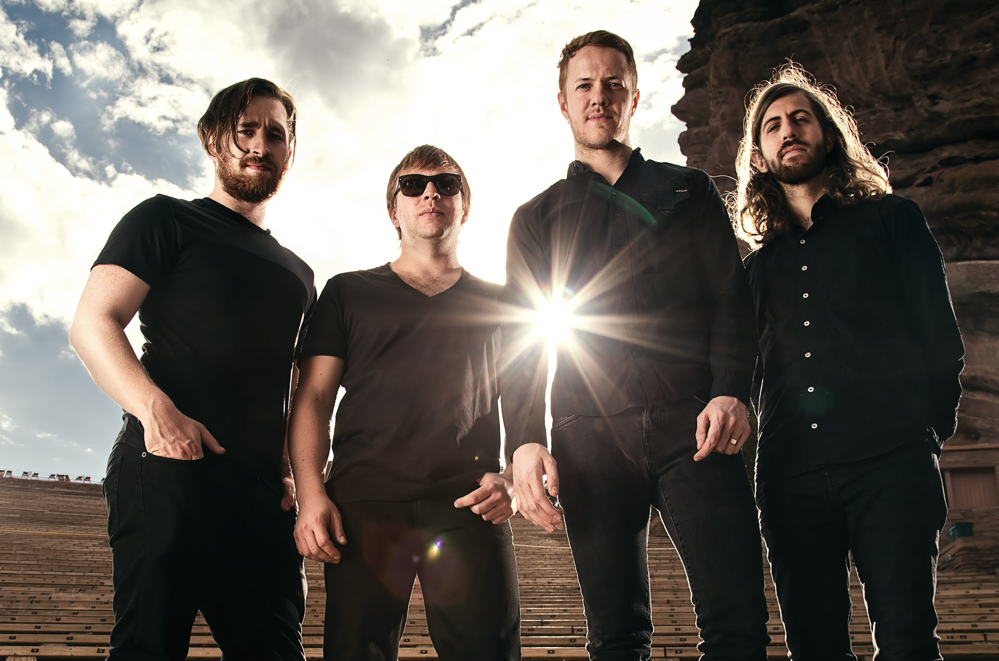

Imagine Dragons este o trupa de rock alternativ din Las Vegas, Nevada, Statele Unite ale Americii.
Trupa a reusit sa ajunga in topuri in septembrie 2012, dupa lansarea primului album de studio, Night Visions si a single-ului It's Time.
Albumul Night Visions a ajuns pe locul 2 in Billboard 200. Conform revistei Billboard, Imagine Dragons este ce mai buna trupa din toate timpurile.
De asemenea, Rolling Stone considera piesa Radioactive cel mai mare hit de muzica rock al anului 2013.

Membrii Formatiei
Dan Reynolds - Voce,chitara acustica, percutie
Daniel Wayne Sermon - Chitara,pian,percutie,voce,mandolina
Ben McKee - Bas, pian, percutie, voce
Daniel Platzman - Tobe, percutie, viola, voce, tamburina